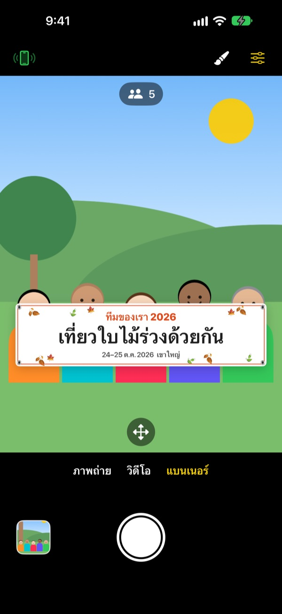
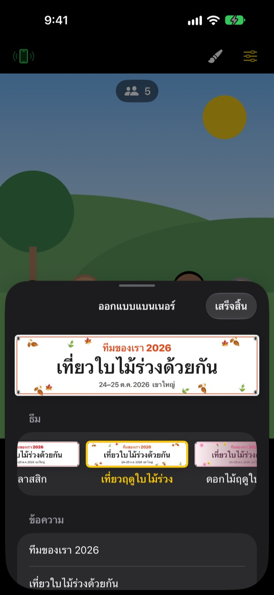

รูปหมู่ถือแบนเนอร์
ไม่ต้องสั่งทำแบนเนอร์
พิมพ์ข้อความ เลือกธีม แล้วแบนเนอร์ในจอจะไปอยู่ตรงหน้าทุกคน iPhone ของเพื่อนกลายเป็นรีโมตได้ด้วยการสแกน QR ครั้งเดียว คนถ่ายเองก็ได้อยู่ในรูปด้วย
ใช้ได้ฟรีทุกฟีเจอร์ รองรับ iOS 17 ขึ้นไป

ลองทำแบนเนอร์ดู
แก้ข้อความแล้วแตะเลือกธีม เมื่อกดชัตเตอร์ จะนับถอยหลัง 3 วินาทีแล้วถ่ายเหมือนในแอป
ต้องสั่งทำแบนเนอร์เพื่อรูปแค่ใบเดียวอยู่หรือเปล่า
สั่งทำแบนเนอร์เพื่อถ่ายรูปทริปแค่ใบเดียว วันงานต้องขนไป เสร็จแล้วก็ไม่รู้จะเก็บไว้ไหน แถมไม่มีใครถ่ายให้ สุดท้ายก็ต้องมีสักคนหลุดเฟรม ShutterLink วางแบนเนอร์ไว้ในภาพจากกล้อง และเปลี่ยน iPhone ของเพื่อนเป็นรีโมต ทุกคนจึงได้อยู่ในรูปพร้อมแบนเนอร์
แบนเนอร์ที่เข้ากับงานของคุณ ทำเสร็จในนาทีเดียว
เลือกจาก 13 ธีม เช่น เที่ยวฤดูใบไม้ร่วง ดอกไม้ฤดูใบไม้ผลิ งานเลี้ยงปีใหม่ วันเกิด วันกีฬาสี รับปริญญา งานแต่งงาน เวิร์กช็อปบริษัท แล้วพิมพ์ข้อความเองได้ 3 บรรทัด
เปลี่ยนพื้นหลัง ฟอนต์ ลวดลาย สี และสัดส่วนได้ ใส่โลโก้ก็ได้ วัสดุเลือกได้ทั้งผ้า ไวนิล และกระดาษ แบนเนอร์ผ้าจะหย่อน มีรอยยับ และพลิ้วตามลมเหมือนของจริง

รีโมตไม่ต้องติดตั้ง แค่สแกน QR
แตะปุ่มรีโมตที่มุมซ้ายบน จะมี QR โค้ดขึ้นมา เพื่อนแค่เปิดแอปกล้องปกติส่องไป ShutterLink Remote จะเปิดขึ้นเป็น App Clip และเชื่อมต่อทันที
ภาพสดบนรีโมตเห็นแบนเนอร์ด้วย จัดมุมเสร็จก็กดชัตเตอร์ได้เลย รูปที่ถ่ายจะส่งไปที่ iPhone ที่เป็นรีโมตทันที เพื่อนที่ไม่มีแอปก็บันทึกและแชร์ได้ตรงนั้นเลย
เริ่มได้ใน 3 ขั้นตอน
- 1
ตั้ง iPhone
เปิด ShutterLink แล้ววางบนขาตั้งกล้องหรือชั้นวาง
- 2
วางแบนเนอร์
เลือกแบนเนอร์ที่ด้านล่าง แตะปุ่มพู่กันเพื่อตั้งข้อความและธีม แล้วแตะพื้นตรงที่ทุกคนจะยืน
- 3
ยกฝ่ามือ
ยกฝ่ามือหรือกดชัตเตอร์บนรีโมต ตัวจับเวลาจะนับถอยหลังแล้วถ่าย
ฟีเจอร์สำหรับรูปหมู่
- ท่าฝ่ามือ · ชัตเตอร์ปรบมือ
- ยกฝ่ามือหันเข้ากล้อง หรือปรบมือดัง ๆ หนึ่งครั้ง ตัวจับเวลาจะเริ่มนับ
- ชัตเตอร์ยิ้ม
- ถ่ายเองเมื่อทุกคนลืมตาและยิ้ม
- ตัวจับเวลา 3 · 5 · 10 · 20 · 30 วินาที
- มีเสียงนับถอยหลัง แฟลชกะพริบตาม และรีโมตสั่นในมือ
- ขอให้ทุกคนมองกล้อง
- กดแล้ว iPhone ที่ถ่ายจะส่งเสียงเรียกให้ทุกคนหันมามองกล้อง
- ถ่ายต่อเนื่อง 3 · 5 ภาพ
- เลือกภาพที่ดีที่สุดที่ทุกคนลืมตาและยิ้มไว้ให้ เปลี่ยนเป็นภาพอื่นในแกลเลอรีได้
- จำนวนคน · ขอบภาพ · ระดับน้ำ
- นับคนในเฟรม เตือนเมื่อมีคนอยู่ชิดขอบ และแสดงระดับน้ำเมื่อเครื่องเอียง
- ถ่ายเป็นช่วง 3 วินาทีถึง 1 นาที
- เก็บภาพพระอาทิตย์ตกหรือขั้นตอนการทำงานเป็นระยะ
- ควบคุมกล้อง
- แตะเพื่อโฟกัสและวัดแสง ชดเชยแสง แฟลช เส้นตาราง ซูม 0.5 ถึง 10 เท่า (ขึ้นอยู่กับรุ่น) สลับกล้องหน้าหลัง และวิดีโอ
- โหมดง่าย
- รีโมตแสดงแค่ปุ่มชัตเตอร์ใหญ่ปุ่มเดียว ผู้สูงอายุก็กดได้ง่าย
- ปุ่มเสียง · Camera Control
- กดชัตเตอร์บน iPhone ที่ถ่ายได้เลยโดยไม่ต้องใช้รีโมต
ในโหมดแบนเนอร์ จะใช้แฟลช ถ่ายต่อเนื่อง ซูม และกล้องหน้าไม่ได้ ส่วนตัวจับเวลา ชัตเตอร์ฝ่ามือ และรีโมตยังใช้ได้ตามปกติ
ใช้ได้ฟรีทุกฟีเจอร์
ฟรี
- โหมดแบนเนอร์และ 13 ธีม
- รีโมตที่ไม่ต้องติดตั้ง (App Clip)
- ชัตเตอร์ฝ่ามือ ปรบมือ ยิ้ม และตัวจับเวลา
- ภาพที่ดีที่สุด นับจำนวนคน ระดับน้ำ
- วิดีโอและการถ่ายเป็นช่วง
สนับสนุนนักพัฒนา (ไม่บังคับ)
- ส่งทิปขนาดเล็ก กลาง หรือใหญ่ได้จากการตั้งค่า
- ทิปไม่ได้ปลดล็อกหรือจำกัดฟีเจอร์ใด ๆ
ไม่ใช่การสมัครสมาชิก จ่ายครั้งเดียวเฉพาะตอนที่ส่งทิป
ไม่มีโฆษณา และไม่ต้องสมัครบัญชี
คำถามที่พบบ่อย
ต้องเตรียมอะไรบ้าง
ติดตั้ง ShutterLink บน iPhone ที่ใช้ถ่าย (iOS 17 ขึ้นไป) ส่วน iPhone ที่เป็นรีโมตไม่ต้องติดตั้งอะไร แค่ต้องต่ออินเทอร์เน็ตตอนเปิด App Clip ครั้งแรก เปิด Bluetooth ทั้งสองเครื่องและวางไว้ใกล้กัน (ปกติไม่เกิน 10 เมตร)
สแกน QR แล้ว App Clip ไม่เปิด
ตรวจดูว่า iPhone ที่เป็นรีโมตต่ออินเทอร์เน็ตอยู่ หรือจะพิมพ์รหัส 4 หลักที่แสดงบน iPhone ที่ถ่ายลงในหน้า ShutterLink Remote แล้วแตะ เชื่อมต่อ ก็ได้ และตรวจดูใน การตั้งค่า › เวลาหน้าจอ › การจำกัดเนื้อหาและความเป็นส่วนตัว ว่าไม่ได้บล็อก App Clip ไว้
ค้างอยู่ที่ "กำลังค้นหากล้อง…"
ต้องเปิด ShutterLink ค้างไว้บนหน้าจอของ iPhone ที่ถ่าย ตรวจดูว่าเปิด Bluetooth ใน การตั้งค่า › Bluetooth ทั้งสองเครื่อง รหัสเชื่อมต่อจะเปลี่ยนทุกครั้งที่เปิดแอป ถ้าเพิ่งเปิดแอปใหม่ ให้ใช้ QR หรือรหัสใหม่ แล้วแตะ ลองอีกครั้ง
ขึ้นว่า "ไม่ได้รับอนุญาตใช้ Bluetooth"
เปิด ShutterLink ใน การตั้งค่า › ความเป็นส่วนตัวและความปลอดภัย › Bluetooth ฝั่งรีโมตเป็น App Clip จึงอาจไม่อยู่ในรายการ ให้สแกน QR อีกครั้งแล้วแตะ อนุญาต เมื่อระบบถาม
ภาพสดกระตุกหรือไม่คมชัด
ภาพสดถูกย่อขนาดไว้เพื่อส่งผ่าน Bluetooth ส่วนรูปและวิดีโอจริงจะบันทึกด้วยคุณภาพเต็มของ iPhone ที่ถ่าย ถ้ามีผนังหรือคนกั้น หรืออยู่ห่างกันมาก ภาพอาจกระตุก แต่ชัตเตอร์และการควบคุมอื่น ๆ ยังใช้ได้
รูปที่ถ่ายไปอยู่ที่ไหน
อยู่ในแอปรูปภาพของ iPhone ที่ถ่าย และในแกลเลอรีของแอป iPhone ที่เป็นรีโมตจะได้รับสำเนาด้วย แต่จะไม่บันทึกเอง ให้บันทึกหรือแชร์ก่อนปิดรีโมต ถ้าไม่มีรูปในแอปรูปภาพ ให้อนุญาต ShutterLink ใน การตั้งค่า › ความเป็นส่วนตัวและความปลอดภัย › รูปภาพ
วิดีโอไม่มีเสียง
เปิด ShutterLink ใน การตั้งค่า › ความเป็นส่วนตัวและความปลอดภัย › ไมโครโฟน
เชื่อมต่อรีโมตหลายเครื่องได้ไหม
ได้ iPhone หลายเครื่องเชื่อมต่อพร้อมกันได้ด้วย QR หรือรหัสเดียวกัน กดจากเครื่องไหนก็ถ่ายด้วยกล้องตัวเดียวกัน
การเชื่อมต่อหลุดระหว่างถ่าย
ShutterLink จะไม่ปล่อยให้หน้าจอดับเองระหว่างที่เปิดอยู่ ถ้ากดปุ่มด้านข้างล็อกเครื่องหรือสลับไปแอปอื่น การเชื่อมต่อจะหลุด ระหว่างถ่ายจึงควรเปิดแอปค้างไว้บนหน้าจอ
รูปถูกอัปโหลดไปที่ไหนหรือเปล่า
ไม่ iPhone สองเครื่องเชื่อมต่อกันตรง ๆ ผ่าน Bluetooth รูปและวิดีโออยู่แค่ใน iPhone ที่ถ่ายและรีโมตที่เชื่อมต่อเท่านั้น ใช้ได้แม้บนภูเขาหรือชายทะเลที่ไม่มีสัญญาณ และไม่ต้องมีบัญชี
ยังแก้ไม่ได้หรือเจอบั๊ก ส่งอีเมลมาที่ leeo@kakao.com ได้เลย บอกรุ่นของ iPhone ทั้งสองเครื่องและเวอร์ชัน iOS มาด้วย จะช่วยให้ตรวจสอบได้เร็วขึ้น